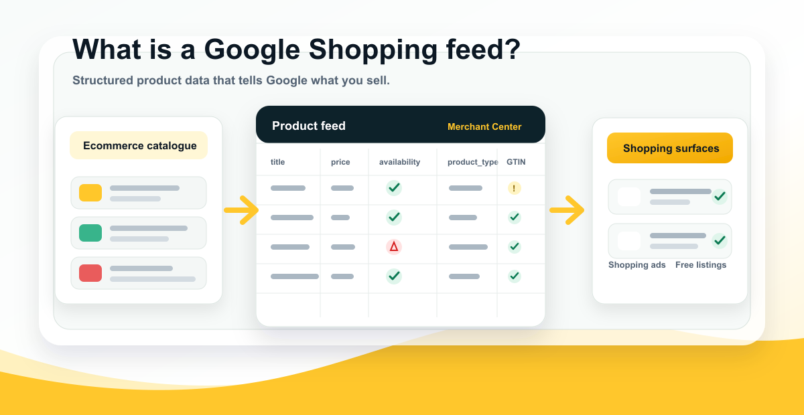

It identifies products
The feed tells Google what each item is, using identifiers, titles, product types, categories, images, and product details.
Google Shopping feed explainer

Last updated:
A shopping feed is the structured product data source that tells a shopping platform what you sell. A Google Shopping feed tells Google what each product is, what it costs, whether it is available, and where shoppers can buy it.
Quick answer
It is the structured catalogue Google reads before products can appear properly in Shopping ads, free listings, product results, and retail Performance Max campaigns. The feed turns ecommerce product data into attributes Google can validate, match, approve, and use in campaigns.
The feed tells Google what each item is, using identifiers, titles, product types, categories, images, and product details.
Merchant Center checks feed data for required attributes, policy issues, price and availability consistency, and destination eligibility.
Better feed data helps Google match products to more relevant shopping intent, segment campaigns, and reduce avoidable errors.
Definition
A Google Shopping feed is a structured product data source that is submitted to Google Merchant Center. It can be a scheduled file, a content API connection, a feed from an ecommerce platform, or product data managed through a feed platform. However it is delivered, the job is the same: give Google a reliable product record for each item you want to show.
Think of the feed as the machine-readable version of your product catalogue. Your website is written for shoppers. Your Google Shopping feed is written for Google. It takes product information such as title, image, price, availability, brand, GTIN, product type, category, and shipping, then formats that information so Google can process it at scale.
This is why a Google Shopping feed is more than a technical export. It is one of the main ways Google understands what your products are, which searches they might match, whether they are eligible to show, and whether the submitted offer matches the product page.
Workflow
The feed usually starts with product data from an ecommerce platform, catalogue system, ERP, PIM, or marketplace database. That source data is transformed into the attributes Google expects, then submitted to Merchant Center. Merchant Center reviews the data, checks it against Google requirements, compares key details with the product page, and determines whether products are approved, limited, disapproved, or eligible for specific destinations.
Once products are approved, Google Ads can use the feed in Standard Shopping campaigns and retail Performance Max campaigns. Free listings can also use Merchant Center product data when the account and products are eligible. The same feed can therefore influence paid visibility, unpaid Shopping visibility, product diagnostics, campaign segmentation, and product-level reporting.
When product data changes, the feed needs to update quickly. Price, availability, sale price, product status, landing page URLs, and variants are especially sensitive. If the feed says a product is in stock but the page says out of stock, or the feed price does not match the landing page, Google may limit or disapprove the product.
Attributes
Google's Merchant Center product data specification defines the product attributes Google can accept. Some attributes are required for most products, while others depend on the product category, country, destination, or campaign type.
Merchant Center
Google Merchant Center is the account layer where product data is uploaded, reviewed, diagnosed, and made available to Google destinations. It is where feed errors, warnings, disapprovals, product status, account settings, shipping settings, tax settings, website verification, and destination eligibility become visible.
A product can be in the feed and still not be eligible. Merchant Center may reject it because of missing attributes, policy issues, price mismatch, availability mismatch, landing page problems, image problems, invalid identifiers, missing shipping, or destination settings. When Shopping ads are not showing, Merchant Center is usually the first place to check before changing campaign settings.
For deeper troubleshooting, use the Google Merchant Center Errors guide and the Google Shopping Ads Not Showing troubleshooting page. They explain the difference between a product that exists in the feed and a product that is actually eligible to serve.
Destinations
A Google Shopping feed can support multiple Google surfaces. For paid media, it can power Standard Shopping campaigns and retail Performance Max campaigns. For organic visibility, it can support Google Shopping free listings when products and the account are eligible. It can also support local inventory use cases when local product and inventory feeds are set up correctly.
The feed does not guarantee impressions. It gives Google the product data required to evaluate and show products. Delivery still depends on approval status, destinations, campaign settings, product groups or listing groups, bids, budgets, goals, price competitiveness, search demand, and product quality.
This is why feed work and Shopping campaign management should not be separated completely. The feed defines what products are and how they can be grouped. Campaigns decide how eligible products are promoted. Weak feed data makes campaign structure harder to manage and Shopping performance harder to diagnose.
Quality
Feed quality matters because Google does not sell your products from your ecommerce database directly. It uses the submitted product data to understand, classify, match, and verify products. If the product title is vague, the product type is shallow, the GTIN is missing, the image is weak, or the price is stale, Google has less useful information to work with.
Good feed quality improves more than approval rates. It can improve long-tail matching, campaign segmentation, product-level analysis, free listing visibility, and the ability to find the products that are blocked or underperforming. Poor feed quality usually shows up as a mix of errors, low impressions, weak click-through rate, wasted spend, messy campaign structures, and products that never get a fair chance to serve.
Classification
Two fields are easy to confuse: product_type and google_product_category. They both describe what a product is, but they serve different roles. Product type in Google Shopping is your merchant-defined category path. It usually maps to your website category structure and can help campaign segmentation, reporting, feed rules, and long-tail product meaning.
Google Product Category is Google's taxonomy classification. Google often assigns it automatically, and in many cases the best first move is to improve the product data and let Google recalculate. If the category is clearly wrong, it can be overridden through feed rules or manual edits.
For a strong Google Shopping feed, do not treat either field as an afterthought. Product type should be descriptive and deep enough to explain the product. Google product category should be checked for accuracy, especially in policy-sensitive or highly competitive categories.
Website signals
A Google Shopping feed does not live in isolation. Google can crawl product pages and read Product structured data. Google Search Central's Product structured data documentation explains how page markup can help Google understand product details such as price, availability, reviews, shipping, and returns. The Google Shopping Graph explainer shows how feeds, pages, structured data, and product signals work together.
The important word is consistency. If the feed says a product costs $149, the product page and structured data should not say $129. If the feed says in stock, the page should not say out of stock. If the feed image points to one variant, the landing page should not default to another unrelated variant.
Consistent feed, page, and structured data makes products easier to verify. Inconsistent data creates avoidable errors and makes it harder to know whether the problem is the ecommerce platform, feed mapping, website template, structured data, or update cadence.
Common mistakes
Most feed problems are not caused by one missing field. They come from using a default ecommerce export as if it were a finished advertising feed. A product page can be good enough for a shopper already browsing the site and still be too thin for Google Shopping.
FeedOps approach
The FeedOps approach is to start with a feed audit, identify the product data gaps that matter commercially, then improve the feed in a way that is repeatable. That means fixing weak titles, missing attributes, shallow product types, identifier issues, custom label gaps, Merchant Center errors, and recurring sync problems rather than treating each error as a one-off task.
A good feed process should not depend on someone remembering to manually check every product every week. FeedOps helps teams create a workflow for auditing, mapping, enriching, monitoring, and improving product data as products are added, changed, promoted, or retired.
Checklist
FAQ
A Google Shopping feed is a structured product data source submitted to Google Merchant Center. It tells Google what products you sell, what each product is called, what it costs, whether it is in stock, what image to show, which page to send shoppers to, and which attributes describe the product.
A Google Shopping feed is a product feed built for Google Merchant Center. Product feeds can also be used for other destinations, including Microsoft, Meta, marketplaces, affiliate networks, comparison sites, and other commerce channels. Each destination has its own format and rules.
The feed is the product data source. Merchant Center is the Google account layer that receives, reviews, diagnoses, and manages that product data. The feed sends the data; Merchant Center tells you whether Google can use it.
Yes. Shopping ads and retail Performance Max campaigns depend on Merchant Center product data. The campaign does not use keywords in the same way as Search ads; it relies heavily on the product feed, campaign settings, bidding, goals, and product eligibility.
Google Shopping free listings can use Merchant Center product data when the account and products are eligible. Feed quality still matters because Google needs accurate titles, images, price, availability, landing pages, identifiers, and product details to understand the offer.
Your feed should update whenever product data changes. For stable catalogues, a daily update may be enough. For retailers with fast-changing stock, promotions, or prices, more frequent updates or API-based syncing may be needed to avoid price and availability mismatch errors.
There is no single field that solves everything, but product title is usually one of the strongest matching fields. It should clearly describe the product and include the product type plus useful attributes. Identifiers, price, availability, images, product type, category, and landing page consistency are also critical.
Yes. FeedOps helps ecommerce teams audit, map, enrich, monitor, and improve Google Shopping feeds, including product titles, product types, required attributes, identifiers, custom labels, Merchant Center errors, and recurring product data issues.